À Propos
Étudiant en 1ère année de BUT Réseaux et Télécommunications à l'IUT, je suis passionné par l'infrastructure informatique et la cybersécurité.

Étudiant en BUT R&T
Curieux et motivé, j'apprends par la pratique via des projets personnels (HomeLab, Scripting) et ma formation académique.
- Diplôme visé : BUT R&T
- Ville : Roubaix / Lille
- Email : arthurhuyghe1@gmail.com
- Niveau : 1ère année
- Anglais : B1+ (Section Euro)
- Permis : B (2025)
J'ai acquis des bases solides en administration Linux (Debian, Docker), en configuration réseau (Cisco, VLANs) et je développe mes propres outils en Python.
Mon Parcours (CV)
Une vue d'ensemble de mon cursus académique, mes certifications et mes expériences.
Formation
BUT Réseaux et Télécommunications
2025 - Présent
IUT (université d'Artois / Béthune)
Formation technique couvrant l'administration système, le réseau (Cisco), la téléphonie et la programmation.
Baccalauréat Général (Mention Bien)
2022 - 2025
Lycée Saint Rémi, Roubaix
Spécialités scientifiques, Section européenne anglais.
Certifications
Diplômes & Brevets
- BAFA : Base (Fév. 2024), Qualification SB (Oct. 2024)
- PSC1 : Premiers Secours (Mai 2021)
- Initiateur SAE : Encadrement escalade (Mai 2021)
- Python Essentials : Programmation (1 & 2)
Expérience Professionnelle
Animateur en ALSH
2024 - 2025
Centres aérés (Juillet 24, Février 25, Été 25)
- Encadrement et animation de groupes d'enfants.
- Responsabilité et surveillance de baignade (SB).
- Travail d'équipe et gestion de conflits.
Bénévole & Initiateur Escalade
2019 - Présent
Club Bou'D'Brousse
- Enseignement des bases de l'escalade et de la sécurité.
- Gestion de groupes et pédagogie.
Stage d'observation
Juin 2023
XXL Événementiel
Découverte du monde professionnel : logistique et prestation audiovisuelle.
Compétences Techniques
Linux (Debian/Ubuntu), Docker, Pterodactyl, Cisco IOS (VLAN, DHCP, Switch/Routeur), Wireshark.
Python (Scapy, Scripting), HTML5/CSS3, SQL, Bases de données MySQL.
Portfolio R&T
Projets académiques (SAE) et personnels illustrant les compétences du Programme National (PN).
Ce que j'ai fait : J'ai réalisé des mesures de tensions et de courants sur des circuits RLC en laboratoire.
Pourquoi je l'ai fait : Il fallait comprendre le comportement électrique des composants de base qui constituent le matériel réseau.
Comment je l'ai fait (méthode, outils, ressources) : J'ai utilisé une platine d'expérimentation, un oscilloscope et un multimètre numérique.
Mes difficultés : J'ai eu du mal à régler la base de temps et les calibres de l'oscilloscope pour obtenir une lecture claire.
Ce que j'en ai appris : J'ai visualisé concrètement la notion de déphasage et vérifié expérimentalement la loi d'Ohm.
Ce que je ferais autrement : Je vérifierais systématiquement mes calculs théoriques sur papier avant de commencer le câblage.
Preuves (PJ) : Compte-rendu du TP d'électricité avec mes relevés.
Notes : Vulgariser ce point lors de l'oral pour le rendre accessible.
Ce que j'ai fait : J'ai utilisé un convertisseur analogique-numérique (Maquette CAN/CNA 33200 Pierron) avec la maquette Analog Discovery.
Pourquoi je l'ai fait : Je voulais observer comment une voix ou un signal électrique est transformé en données binaires pour être transmis.
Comment je l'ai fait (méthode, outils, ressources) : J'ai généré des signaux avec l'Analog Discovery et observé les mots binaires en sortie de la maquette CAN.
Mes difficultés : Comprendre la notion de fréquence d'échantillonnage de Shannon a été complexe au début.
Ce que j'en ai appris : J'ai compris l'impact direct du nombre de bits (résolution) sur la fidélité du signal reconstitué.
Ce que je ferais autrement : Je ferais davantage de schémas chronogrammes au brouillon pour anticiper les résultats de la maquette.
Preuves (PJ) : Captures d'écran des courbes CAN/CNA sur l'oscilloscope virtuel.
Notes : Faire le lien direct avec le débit d'un réseau informatique.
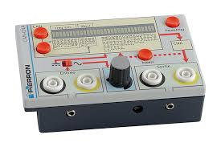
Ce que j'ai fait : J'ai configuré des commutateurs Cisco Catalyst 2960 et des routeurs de la série 2900 pour relier plusieurs PC.
Pourquoi je l'ai fait : L'objectif était de permettre la communication IP entre différentes machines appartenant à des sous-réseaux distincts.
Comment je l'ai fait (méthode, outils, ressources) : J'ai d'abord simulé l'architecture sur Packet Tracer, puis j'ai utilisé des câbles console sur le vrai matériel Cisco (CLI).
Mes difficultés : Mémoriser les différentes commandes de l'IOS Cisco et comprendre les modes d'exécution a été un défi.
Ce que j'en ai appris : J'ai assimilé le rôle de la table MAC pour les switchs et de la table de routage pour les routeurs.
Ce que je ferais autrement : Je préparerais un script texte avec toutes mes commandes avant de brancher le câble console.
Preuves (PJ) : Topologie réseau Packet Tracer et fichier de configuration (.txt).
Notes : Bien différencier l'adresse physique (MAC) de l'adresse logique (IP).
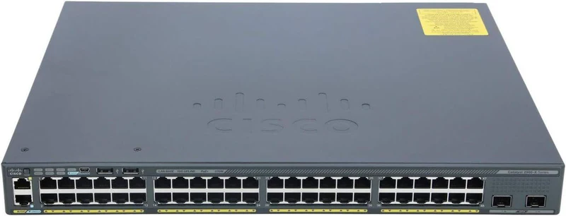
Ce que j'ai fait : J'ai installé et paramétré Windows Server et utilisé Ubuntu en travaux pratiques.
Pourquoi je l'ai fait : Il était nécessaire de savoir administrer de manière centralisée un réseau d'entreprise hétérogène.
Comment je l'ai fait (méthode, outils, ressources) : J'ai utilisé des machines virtuelles sous VirtualBox pour déployer un annuaire Active Directory sous Windows.
Mes difficultés : La configuration du serveur DNS, indispensable au bon fonctionnement de l'Active Directory, m'a posé problème.
Ce que j'en ai appris : J'ai acquis les bases de la gestion des droits, des groupes d'utilisateurs et des stratégies de groupe (GPO).
Ce que je ferais autrement : Je documenterais chaque étape de l'installation pour créer un tutoriel qui me servira plus tard.
Preuves (PJ) : Captures d'écran de mon interface d'administration Active Directory.
Notes : Insister sur la complémentarité entre Linux et Windows.
Ce que j'ai fait : J'ai effectué des opérations de dépannage lors de la mise en place du réseau de la SAÉ 12.
Pourquoi je l'ai fait : Le but était de rétablir la communication entre les postes clients et le serveur principal de l'entreprise fictive.
Comment je l'ai fait (méthode, outils, ressources) : J'ai utilisé des commandes de diagnostic réseau comme "ping", "tracert" et "ipconfig" / "ifconfig".
Mes difficultés : Il m'a été difficile d'isoler rapidement si le problème était physique (câble virtuel) ou logique (erreur IP).
Ce que j'en ai appris : J'ai appris à suivre une méthodologie de diagnostic rigoureuse, en vérifiant couche OSI par couche OSI.
Ce que je ferais autrement : Je testerais la connectivité à chaque nouvelle étape de configuration, plutôt que de tout tester à la fin.
Preuves (PJ) : Journal de bord répertoriant les erreurs rencontrées et leurs solutions.
Notes : Montrer ma capacité à analyser un problème calmement.
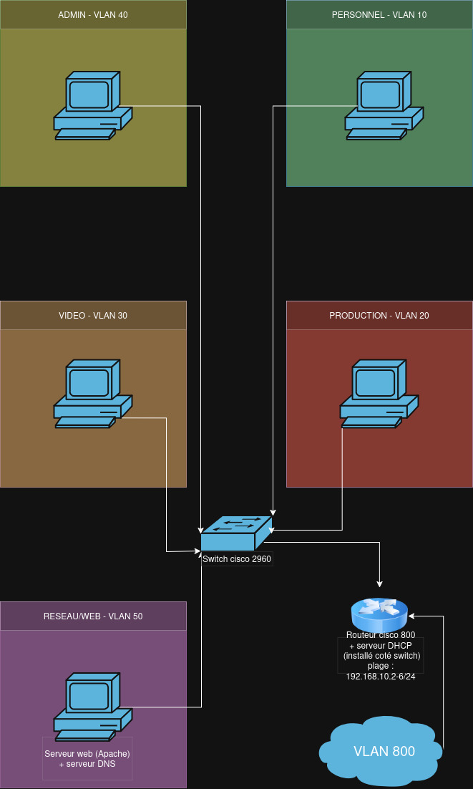
Ce que j'ai fait : J'ai déployé un poste sous Ubuntu et je l'ai intégré au réseau de notre SAÉ.
Pourquoi je l'ai fait : Il fallait fournir un environnement de travail fonctionnel et connecté à un nouvel utilisateur.
Comment je l'ai fait (méthode, outils, ressources) : J'ai réalisé une installation propre depuis une image ISO, puis j'ai configuré l'adressage IP via le terminal.
Mes difficultés : Paramétrer correctement l'interface réseau virtuelle dans VirtualBox pour qu'elle discute avec le serveur a pris du temps.
Ce que j'en ai appris : J'ai compris l'importance de paramétrer correctement la passerelle par défaut et le serveur DNS sur un client.
Ce que je ferais autrement : J'utiliserais un serveur DHCP pour automatiser la distribution des adresses IP au lieu de le faire manuellement.
Preuves (PJ) : Capture d'écran du terminal validant l'accès au réseau de l'entreprise.
Notes : Relier cela aux besoins d'assistance utilisateur (Helpdesk).
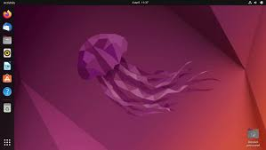
Ce que j'ai fait : J'ai procédé à l'analyse spectrale d'un signal carré en laboratoire de télécommunications.
Pourquoi je l'ai fait : Je devais observer les différentes fréquences (harmoniques) qui composent un signal complexe.
Comment je l'ai fait (méthode, outils, ressources) : J'ai manipulé un générateur de fonctions couplé à un analyseur de spectre.
Mes difficultés : Interpréter le domaine fréquentiel affiché à l'écran par rapport au domaine temporel classique a demandé de la réflexion.
Ce que j'en ai appris : J'ai compris la décomposition de Fourier de manière très visuelle et pratique.
Ce que je ferais autrement : Je prendrais le temps d'exporter les données de l'appareil sur clé USB pour illustrer plus proprement mon rapport.
Preuves (PJ) : Graphiques spectraux annotés avec les fréquences fondamentales.
Notes : Ce point illustre bien le lien entre mathématiques et électronique.
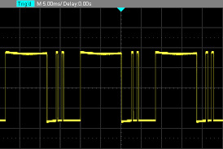
Ce que j'ai fait : J'ai étudié et mesuré les signaux d'une modulation d'amplitude (AM).
Pourquoi je l'ai fait : L'objectif était de comprendre comment une information basse fréquence est transportée par une porteuse haute fréquence.
Comment je l'ai fait (méthode, outils, ressources) : J'ai utilisé des maquettes spécifiques de modulation et observé les signaux entrants et sortants à l'oscilloscope.
Mes difficultés : Régler les paramètres pour éviter la surmodulation (qui déforme le signal) a demandé beaucoup de minutie.
Ce que j'en ai appris : J'ai perçu comment le bruit ambiant peut facilement dégrader un signal analogique modulé.
Ce que je ferais autrement : Je comparerais visuellement ces résultats avec une modulation de fréquence (FM) pour mieux comprendre les différences.
Preuves (PJ) : Relevés de courbes oscilloscopiques du signal modulé.
Notes : C'est la base théorique essentielle pour aborder le Wi-Fi plus tard.
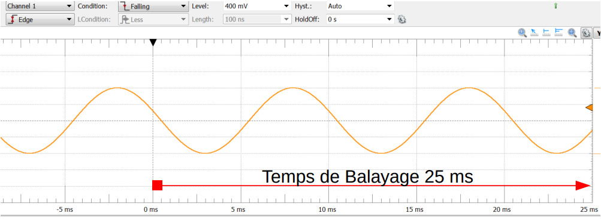
Ce que j'ai fait : J'ai étudié en détail la structure interne d'un câble à paires torsadées (RJ45) et les différentes normes existantes.
Pourquoi je l'ai fait : Il était essentiel de comprendre les caractéristiques physiques des câbles pour faire les bons choix de supports matériels lors du déploiement d'un réseau local.
Comment je l'ai fait (méthode, outils, ressources) : J'ai analysé des échantillons de câbles ouverts en classe, observé les blindages et étudié les normes de câblage (EIA/TIA 568) à l'aide des supports de cours.
Mes difficultés : Mémoriser les différents types de blindages (UTP, FTP, STP) et leurs impacts réels sur la diaphonie a été difficile au début.
Ce que j'en ai appris : J'ai compris l'importance de la torsion des paires pour annuler les interférences et j'ai appris à différencier les catégories de câbles en fonction des débits.
Ce que je ferais autrement : J'aurais aimé avoir le temps de pratiquer réellement le sertissage d'une prise RJ45 avec une pince spécifique pour concrétiser cette étude théorique.
Preuves (PJ) : Schémas annotés de la coupe d'un câble RJ45 issus de mes notes de cours.
Notes : Préciser à l'oral que la pratique du sertissage n'a pas pu être faite par manque de temps, mais que la théorie est acquise.
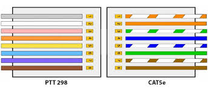
Ce que j'ai fait : J'ai installé un serveur Asterisk et un serveur TFTP pour relier un téléphone Fanvil et un Cisco.
Pourquoi je l'ai fait : L'enjeu était de faire communiquer entre eux deux téléphones physiques de marques différentes via le protocole SIP.
Comment je l'ai fait (méthode, outils, ressources) : J'ai installé un serveur Debian virtuel, paramétré le service TFTP, et édité les fichiers "sip.conf" et "extensions.conf".
Mes difficultés : Comprendre la syntaxe stricte exigée par les fichiers de configuration Asterisk a demandé beaucoup de concentration.
Ce que j'en ai appris : Il est essentiel d'analyser les fichiers ligne par ligne et j'ai appris à déployer les VM simultanément pour gagner du temps.
Ce que je ferais autrement : Je sauvegarderais systématiquement les fichiers de configuration d'origine avant de commencer mes modifications.
Preuves (PJ) : Extraits commentés de mes fichiers de configuration et vidéo d'un appel.
Notes : Faire le lien entre les TP et les concepts de la VoIP vus en cours.
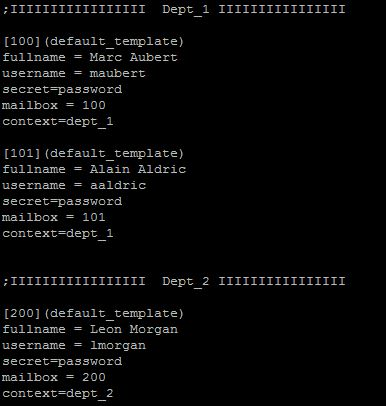
Ce que j'ai fait : J'ai réalisé une présentation orale devant la classe lors de mes cours de communication et d'anglais.
Pourquoi je l'ai fait : L'objectif était d'apprendre à structurer mon discours, à m'exprimer en public et à adapter mon vocabulaire (y compris en anglais).
Comment je l'ai fait (méthode, outils, ressources) : J'ai préparé un diaporama épuré pour appuyer mes propos, et j'ai rédigé des fiches mémos pour ne pas lire mes notes.
Mes difficultés : Gérer mon stress face au public et trouver fluidement mes mots en anglais ont été de véritables défis.
Ce que j'en ai appris : J'ai compris que la communication non verbale (posture, regard, intonation) est vitale lors d'une intervention.
Ce que je ferais autrement : Je m'enregistrerais en vidéo lors de mes répétitions pour repérer mes tics de langage et améliorer ma posture.
Preuves (PJ) : Support de présentation (diaporama) et grille d'évaluation de l'enseignant.
Notes : Insister sur l'importance de l'anglais technique dans l'informatique.

Ce que j'ai fait : J'ai pris en main l'environnement Linux en ligne de commande.
Pourquoi je l'ai fait : Il est indispensable de savoir se déplacer et gérer des fichiers sans interface graphique sur les serveurs professionnels.
Comment je l'ai fait (méthode, outils, ressources) : J'ai utilisé le terminal d'Ubuntu et manipulé les commandes de base (ls, cd, grep, chmod, nano).
Mes difficultés : Abandonner le confort de la souris et mémoriser les options de chaque commande a été déroutant au départ.
Ce que j'en ai appris : J'ai découvert la puissance et la rapidité du shell, notamment pour gérer les permissions des fichiers.
Ce que je ferais autrement : Je créerais dès le début des raccourcis (alias) pour les commandes que j'utilise le plus souvent.
Preuves (PJ) : Capture de l'historique de mes commandes shell (.bash_history).
Notes : Compétence incontournable pour l'administration système.
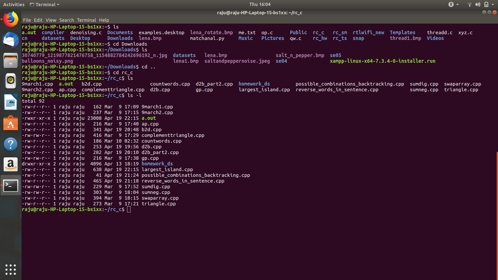
Ce que j'ai fait : J'ai débogué un script Python fourni avec des erreurs intentionnelles par l'enseignant.
Pourquoi je l'ai fait : Je devais analyser la logique d'un code écrit par un tiers pour l'optimiser et le rendre fonctionnel.
Comment je l'ai fait (méthode, outils, ressources) : J'ai utilisé un IDE (Visual Studio Code) avec des points d'arrêt (breakpoints) pour suivre l'exécution pas à pas.
Mes difficultés : Suivre l'évolution de la valeur des variables à l'intérieur des boucles complexes a demandé beaucoup de concentration.
Ce que j'en ai appris : J'ai appris qu'il faut être extrêmement méthodique et patient lors du débogage d'un programme informatique.
Ce que je ferais autrement : J'ajouterais plus de logs ou de commandes "print" dans le code pour tracer facilement ce qui se passe.
Preuves (PJ) : Code Python d'origine commenté et version finale corrigée.
Notes : Utile pour aborder l'automatisation réseau dans le futur.
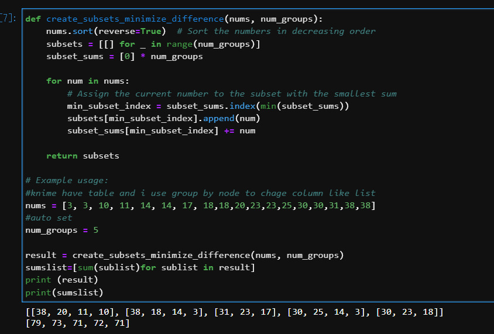
Ce que j'ai fait : J'ai développé un petit programme en Python pour calculer automatiquement des masques de sous-réseau.
Pourquoi je l'ai fait : L'objectif était d'automatiser un calcul réseau récurrent en appliquant une logique algorithmique stricte.
Comment je l'ai fait (méthode, outils, ressources) : Je suis parti d'un algorigramme dessiné sur papier, que j'ai ensuite traduit en code Python via un environnement de développement.
Mes difficultés : Respecter l'indentation stricte exigée par Python pour délimiter les blocs d'instructions m'a posé quelques difficultés.
Ce que j'en ai appris : J'ai compris comment utiliser les boucles et les conditions en Python pour traiter les différentes parties d'une adresse IP.
Ce que je ferais autrement : J'utiliserais davantage les blocs "try/except" pour éviter que le programme ne plante en cas de mauvaise saisie de l'utilisateur.
Preuves (PJ) : Fichier source (.py) du programme et capture d'écran d'un calcul réussi.
Notes : Le développement Python est très utilisé pour l'automatisation réseau.
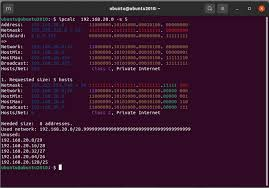
Ce que j'ai fait : J'ai créé une page web statique que j'ai hébergée sur un serveur web local (portfolio).
Pourquoi je l'ai fait : Il fallait comprendre concrètement le fonctionnement du modèle client-serveur web (requêtes HTTP).
Comment je l'ai fait (méthode, outils, ressources) : J'ai codé en HTML et CSS sur un éditeur de texte, et j'ai installé le serveur Apache sous Linux pour héberger les fichiers.
Mes difficultés : Centrer les éléments avec CSS et rendre la page adaptable à la taille de l'écran (responsive) a été fastidieux.
Ce que j'en ai appris : J'ai bien assimilé le rôle du "front-end" pour l'affichage visuel et du serveur pour la distribution des fichiers.
Ce que je ferais autrement : J'utiliserais un framework CSS simple comme Bootstrap pour gagner du temps sur la mise en page visuelle.
Preuves (PJ) : Code source HTML/CSS et capture d'écran du site hébergé.
Notes : Base solide pour gérer les interfaces d'administration web des routeurs.

Ce que j'ai fait : J'ai conçu une petite base de données relationnelle pour recenser le matériel des labos de chimie.
Pourquoi je l'ai fait : L'information devait être structurée correctement pour pouvoir effectuer des recherches rapides et précises.
Comment je l'ai fait (méthode, outils, ressources) : J'ai commencé par dessiner un Modèle Conceptuel de Données (MCD) avant de créer les tables en langage SQL.
Mes difficultés : Comprendre les règles de normalisation pour éviter d'avoir des informations en double a demandé de la réflexion.
Ce que j'en ai appris : J'ai appris le principe des clés primaires, des clés étrangères et la puissance des jointures dans les requêtes SQL.
Ce que je ferais autrement : Je définirais beaucoup mieux mes besoins au brouillon avant de lancer la création des tables informatiques.
Preuves (PJ) : Schéma relationnel de la base et exemples de requêtes SQL de recherche.
Notes : Les bases de données sont essentielles dans tout système d'information.

Ce que j'ai fait : J'ai utilisé GitLab et GitHub lors d'un projet informatique réalisé en groupe.
Pourquoi je l'ai fait : Nous avions besoin de gérer les versions de notre code source sans écraser le travail de nos camarades.
Comment je l'ai fait (méthode, outils, ressources) : Nous avons créé un dépôt distant, utilisé les commandes de "commit", de création de branches et de fusion (merge).
Mes difficultés : Gérer les conflits de fusion, lorsque deux personnes avaient modifié la même ligne de code en même temps, a été source de stress.
Ce que j'en ai appris : J'ai compris que la communication au sein de l'équipe est aussi importante que la maîtrise technique des outils collaboratifs.
Ce que je ferais autrement : Je ferais des sauvegardes de code (commits) beaucoup plus fréquentes, petites et précises au lieu de gros blocs.
Preuves (PJ) : Lien vers notre dépôt GitHub étudiant et historique de nos commits.
Notes : C'est une compétence transversale très recherchée par les entreprises.

Projets Personnels
Initiatives extra-scolaires développées en autonomie.